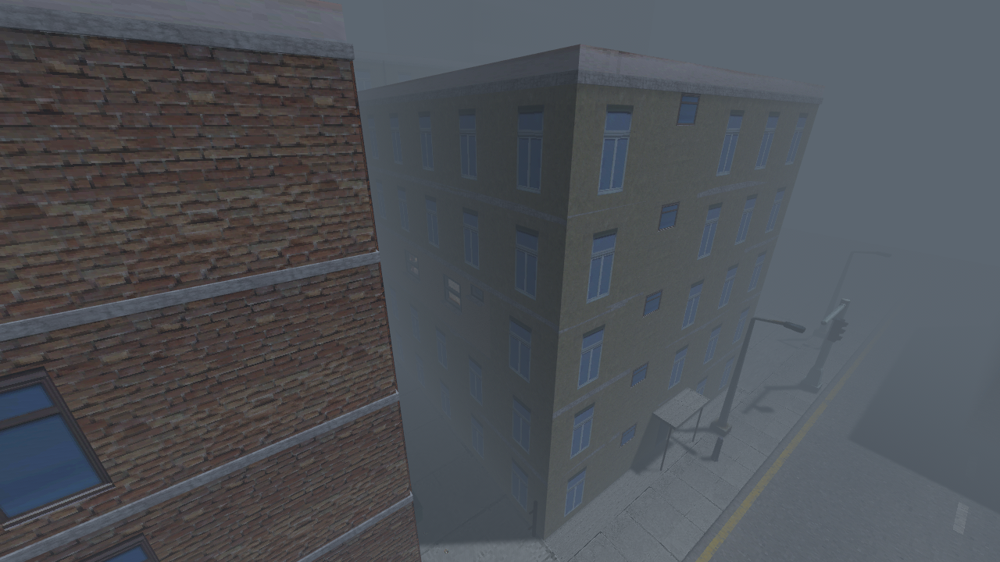
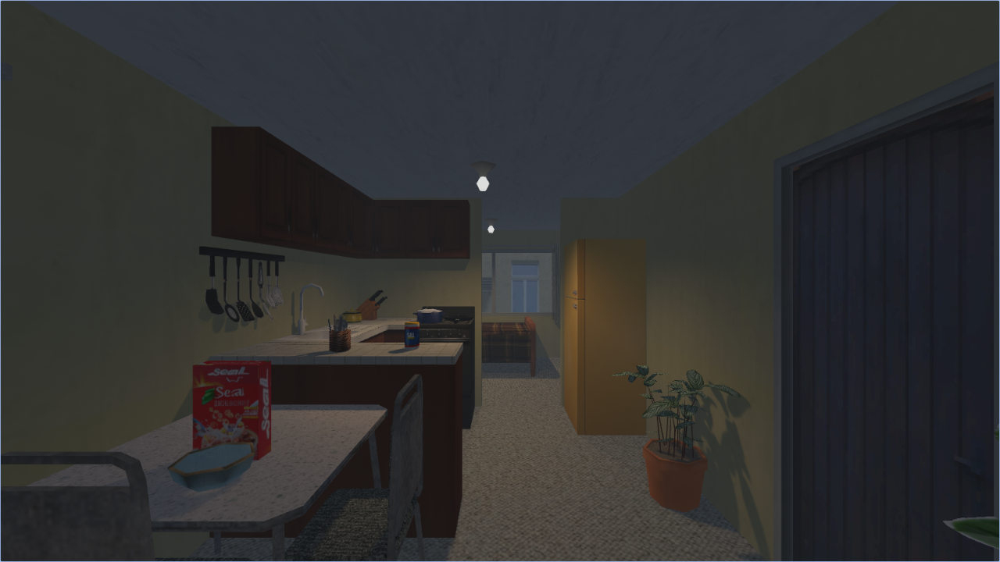
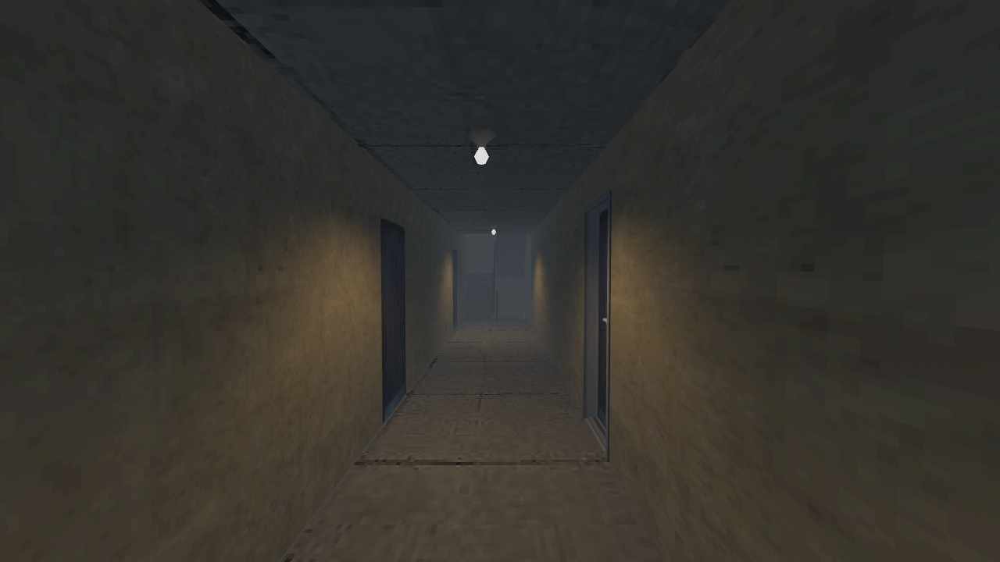
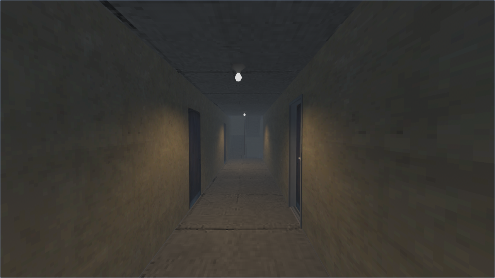

Matching review cameras at 1280 × 720 on Intel Iris Xe. Both builds use one sunlight shadow cascade and six shadow-casting indoor spotlights.
WebGPU restores the indoor plant, utensil and furniture shadows missing in WebGL2. Native and web now look closely matched in these views, with small rendering differences remaining.



